สกิลสาย Bomber

|
| 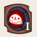 |
Mine
วางกับดักที่ระเบิดเมื่อมีศัตรูเข้า มาในรัศมี
สถานะ Active เลเวลสูงสุด 4
|
| 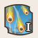 |
Mortar Shot
ยิงปืนใหญ่ต่อเนื่องเป็นวิถีโค้งขึ้นฟ้าเพื่อเพิ่มระยะทางการยิง
สถานะ Active เลเวลสูงสุด 2
|
| 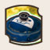 |
Bunker
(พัฒนาจากMortar Shot)
มุดเข้าหลุมหลบภัย ป้องกันการ KO และลดความเสียหายลงสามในสื่
สถานะ Active เลเวลสูงสุด 2
|
| 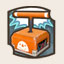 |
TNT
กดสวิทช์ให้เกิดระเบิดขึ้นในระยะและเพิ่มความเสียหายให้
สกิล TNT ทั้งหมด
สถานะ Active เลเวลสูงสุด 4
|
 |
Stun Mine
วางกับดักที่ระเบิดทำ KO ให้กับ ทุกคนในระยะเมื่อมีศัตรูเข้ามาใกล้
สถานะ Active เลเวลสูงสุด 4
|
| 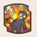 |
Stun Grenade
(พัฒนาจาก
Stun Mine)
ปาระเบิดที่ทำ KO กับเป้าหมายและทุกคนในระยะ
สถานะ Active เลเวลสูงสุด 2
|
| 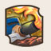 |
Frame Turret
พ่นไฟไปด้านหน้าลดความเสียหายลงครึ่งหนึ่ง หมุนตามการกดบังคับ
สถานะ Active เลเวลสูงสุด 3
|
| 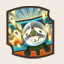 |
Fire Barrage
เรียกเครื่องบินมายิงปืนกลขับไล่ที่เป้าหมายหรือตำแหน่งเมาส์
สถานะ Actve เลเวลสูงสุด 2
|
| 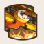 |
Bombardment
เรียกเครื่องบินมาทิ้งระเบิด ณ เป้าหมายหรือตำแหน่งเมาส์
สถานะ Active เลเวลสูงสุด 2
|
| 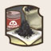 |
Extra Powder
ขยายวงรัศมีของระเบิดจากการโจมตีปกติและสกิลระเบิด
ทั้งหมดออกไปอีก 1 m
สถานะ Passive เลเวลสูงสุด 3
|
| 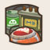 |
Smart Shell
(พัฒนาจาก
Extra Powder)
เพิ่มพลังให้Mine/Stun Mine/Stun Grenade และ Time Nuke
และลดความเสียหายที่เพื่อนและเราได้รับครึ่งนึง
สถานะ Passive เลเวลสูงสุด 1
|
| 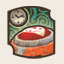 |
Time Nuke
วางระเบิดเวลาที่ระเบิดหลังจาก 60 วินาที
ทำร้ายศัตรูและเพื่อนทุกคนในรัศมี
สถานะ Active เลเวลสูงสุด 2
|
| 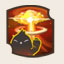 |
Detonate
(พัฒนาจาก
Time Nuke)
ทำให้Time Nukeระเบิดทันที แต่ลดดาเมจลงตามเวลาที่เหลือ
สถานะ Active เลเวลสูงสุด 1
|